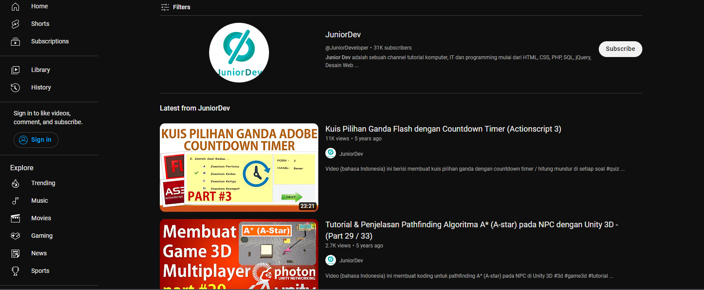

Rekomendasi 10 Channel YouTube yang Sangat Bermanfaat di Dunia IT!!
penulis M Azka Fakhri Fairuz -23 Januari 2023

Hallo Sobat Mhmmd Azka!
Tentu kalian gak asing lagi dengan yang namanya IT(Informasi Teknologi) kan?Pada zaman sekarang apa-apa itu pasti pakai teknologi. Mau makan,pakai teknologi. Mau berangkat,pakai teknologi sampai mau tidur pun pasti ada hubungannya dengan teknologi.
Dari hari-hari teknologi semakin canggih saja. Mimin yakin kamu pasti tidak ingin jadi orang yang GapTek alias gagap teknologi? Iyaa dong.Sehubungan dengan kentalnya teknologi yang saat ini diperlukan dan banyak menjadi kiblat orang-orang, baik dalam berbisnis, berkegiatan sosial, dan lain-lain, disini juga makin banyak muncul fenomena edukasi tentang teknologi informasi atau IT yang berkeliaran di platform online.
Salah satunya Youtube. Sudah banyak sekali IT Youtuber yang mengedukasi dengan cara memberi tips dan trik berguna. Terlebih lagi orang-orang yang terobsesi menjadi seorang web developer, programmer, dan sejenisnya. Apalagi Youtube mudah banget diakses dan bisa ditonton kapan saja dan dimana saja. Apakah kamu salah satu IT enthusiast yang ingin terus belajar? Jika iya, wah kamu wajib scroll ke bawah dan cek rekomendasi dari mimin nih.
Menurut Exabytes ada 10 Channel YouTube yang wajib kalian kunjungi. Yuk simak 10 Youtuber dibawah ini yang wajib kamu subscribe untuk mendapatkan tips, trik, dan point of view dari mereka seputar tentang teknologi yang pastinya edukatif!
1. Web Programming UNPA(Sandhika GAlih)
Channel Youtube tersebut dikelola langsung oleh dosen Teknik Informatika Universitas Pasundan yaitu Sandhika Galih Amalga, ST. MT. Beliau memulai mengelola kanal Youtube sejak 4 tahun belakangan dan cukup produktif memberikan konten seputar IT. Sandhika memang lebih prefer mengajar rumpun keilmuan Prologic, sehingga mungkin bisa disebut expertise web di UNPAS.
Kini Sandhika telah memiliki 312k Subrcribers lho dan sudah mempublikasikan 389 video, wow! Tak heran bila banyak banget orang yang subscribe karena materi yang dipaparkan mudah dimengerti.
2. Kepoin IT
Kepoin IT adalah salah satu kanal yang wajib banget kamu follow nih guys! Karena disini kamu akan menemukan banyak sekali informasi dan tutorial seputar teknologi. Dengan slogan “Selamat Datang di Channel Anti Gaptek”, channel ini sudah menebus hingga 183.000 subscribers lho.
Setiap video yang mereka publikasi merupakan pengalam pribadi loh guys! Sebelum membuat video dan mempublish di kanal youtubenya, mereka selalu melakukan riset terlebih dahulu sehingga video tutorial yang mereka bagikan pasti akan berhasil jika diikuti dengan benar.
3. Sekolah Koding
Nah, dari banyaknya video tutorial atau tips dan trik, sebenarnya lumayan susah buat cari kanal Youtube yang informasinya ngena dan nyampe ke audiens. Apalagi untuk orang-orang yang benar-benar butuh info terkait dunia teknologi, khususnya di Indonesia.
Di kanal Sekolah Koding hadir untuk teman-teman yang ingin belajar programming khususnya dari segi pengembangan website. Semua dijelaskan disini mulai dari belajar membuat website, belajar Javascript, belajar Phyton hingga backend dan frontend website juga lho.
Bonus juga nih! Buat kamu yang mau belajar desain, di Sekolah Koding juga sering memberikan informasi tentang desain. Yuk subscribe dan pantengin terus video terbaru dari Sekolah Koding!
4. Galih Pratama
Galih Pratama adalah salah satu IT Youtuber yang hadir di tengah kerisauan kamu yang ingin belajar programming, Web design, UI/UX, Android, dan lain-lain.
Galih Pratama juga sering kali membagikan point of view nya, atau biasa kita kenal dengan konten “mereview” teknologi terbaru yang ada. Ia juga gemar mengedukasi teman-teman tentang mempelajari koding yang kerap kali terlihat susah. Kamu juga bisa banget belajar dan mendapat ilmu dari dia lho.
5. Junior Dev

Nah! Youtuber atau kanal youtube yang satu ini mungkin sedikit familiar di publik. Apalagi kalangan teman-teman yang gemar belajar mengenai dunia teknologi, khususnya untuk game developer nih.
Junior Dev adalah salah satu kanal Youtube dengan yang konten yang mayoritas membahas tentang video tutorial komputer, IT, dan programming mulai dari HTML, CSS, PHP, SQL, JQuery, Desain Web, Game Development, Adobe Flash, WordPress, Android, dan lain sebagainya.
Disini kamu juga bisa mendapatkan banyak tutorial gratis yang kekinian yang pastinya mudah kamu pelajari nih.
6. Angga Risky
Angga Risky adalah salah satu Youtuber yang menginspirasi dan menjadi kiblat untuk belajar seputar teknologi. Di kanal milik pribadi, ia membagikan banyak sekali pengetahuan yang harus dimiliki oleh kamu yang ingin banget jadi web developer.
Nggak hanya seputar IT tetapi dia juga membagikan ilmu tentang web design dan desain grafis yang sudah ia geluti sejak lama. Total subscribers yang diraihnya sudah hampir 90.000 lho. Konten yang dibuat banyak banget mulai dari Android Studio, Photoshop, Bootstrap, Javascript, PHP MySQLi dan masih banyak lagi.
7. HACKTIV8 Indonesia
Kanal dengan kurang lebih 8k subscribers ini memang dikenal “go internasional” dibanding Youtuber yang lain karena mereka juga memiliki komunitas yang tersebar di beberapa negara.
HACKTIV8 Indonesia seringkali membagikan video mengenai programming yang diberi jargon “membantu para pemula untuk bisa menjadi web programming expertise dalam 12 minggu”.
Nyatanya, kanal Youtube yang dibangun pada November 2016 ini memiliki puluhan video yang sangat bermanfaat. Ditambah lagi, mereka juga sering mengadakan live di kanalnya dengan berkolaborasi dengan beberapa programer andal lho.
8. CodePolitan
Selanjutnya ada CodePolitan dengan jumlah 772,136 views hingga hari ini. Channel ini merupakan media edukasi dan informasi tentang pemrograman dan teknologi. CodePolitan memang dibangun untuk memfasilitasi para beginner developer dalam mendapatkan informasi dan pengetahuan seputar pemrograman dan teknologi.
Kini CodePolitan sendiri tengah mencapai 21,5k subscribers dengan jumlah 104 video tutorial ngoding di dalamnya. Video yang sudah diunggah mulai dari algoritma dasar, dasar HTML dan CSS, belajar pemrograman PHP hingga tips dan trick seputar menjadi programmer nih.
9. Dicoding Indonesia
Nah nggak seperti kanal yang lain, Dicoding Indonesia ini memfokuskan videonya membahas tentang dunia koding saja. Dibuat di tengah tahun 2015, Dicoding Indonesia mulai membagikan banyak video tentang koding. Tujuan dibuatnya kanal youtube ini sendiri adalah untuk mengembangkan ekosistem developer di Indonesia.
Menarik nih guys, disini kamu akan dibantu berkembang dan banyak belajar hal baru tentang dunia pengkodingan. Kamu nggak usah khawatir, karena Dicoding Indonesia membagikan videonya dalam bahasa Indonesia dan tentunya mudah untuk dipahami. Selain itu, Dicoding Indonesia juga sering sekali membuat event tentang live coding di kanal Youtubenya.
10. Programmer Zaman Now
Last but not least, ada channel Programmer Zaman Now. Kanal ini dikelola oleh Eko Kurniawan Khannedy yang saat ini berprofesi sebagai Technical Architect di Blibli.com. Ia telah memiliki background programmer lebih dari 10 tahun lho.
Ia membuat channel ini sejak tahun 2018 untuk membagikan vlog dan screencast seputar dunia programmer. Konten yang bisa kamu tengok ada belajar Docker, Java, Typecript, Javascript, Kotlin hingga tips dan trick menarik hingga softskill yang harus dimiliki programmer nih. Wah, menarik banget kan?
Nah guys, itulah tadi beberapa Youtuber yang inspiratif dan edukatif dalam memberikan pandangannya tentang dunia teknologi atau IT. Kamu bisa pilih salah satu dari rekomendasi mimin di atas untuk belajar dan mengenal dunia IT lebih dalam. Atau malah kamu sudah menjadi subscriber mereka sejak lama?
Ke-10 Youtuber diatas membagikan videonya dalam bahasa Indonesia jadi dipastikan kamu nggak sulit untuk memahaminya deh! Buruan ditonton, subscribe, dan dipelajari ya! Atau kalau kamu ada rekomendasi channel Youtube andalan atau favoritmu mengenai IT, share di kolom komentar ya, friends!
Good luck and stay healthy, Mhmmd Azka Friends!
Jangan lupa like and follow juga sosial media kami yaa :)